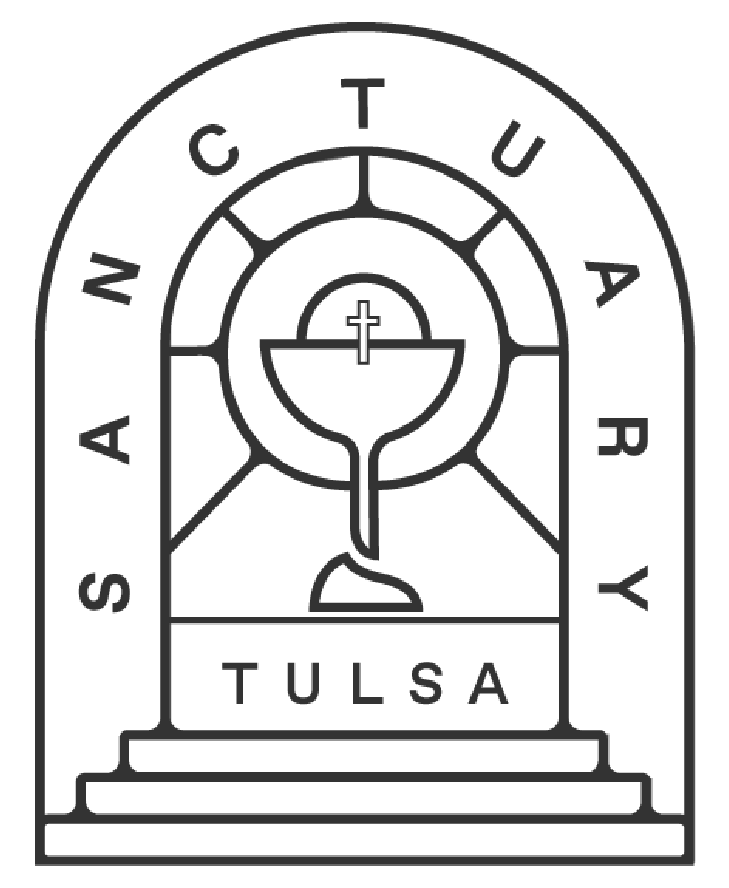

The look and feel draws on ecclesiastical line-art: arched forms, single-weight hairline strokes, and sacred iconography rendered in pure outline.
Reference only — belongs to Sanctuary Tulsa, not Common Prayer